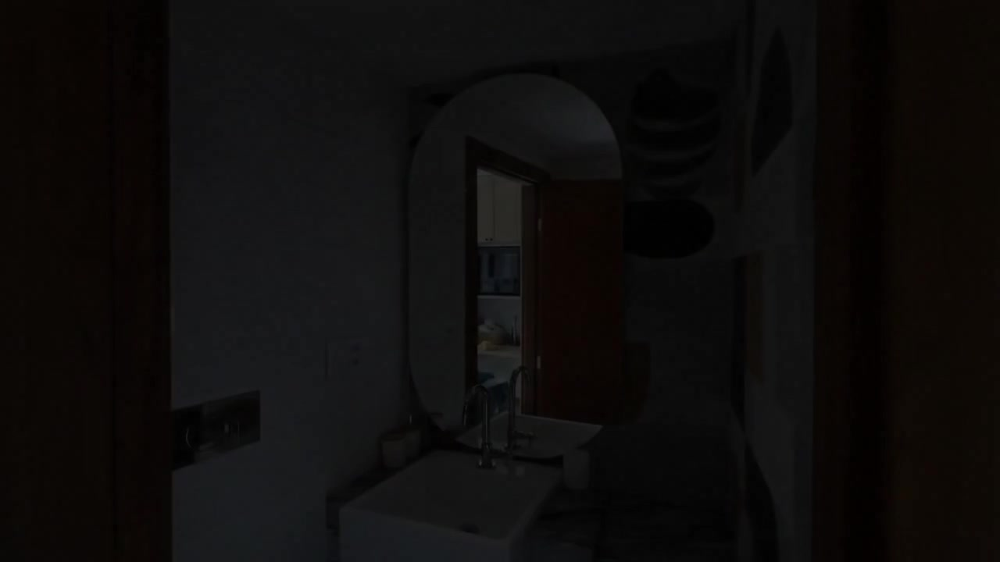
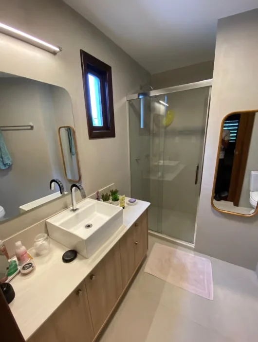
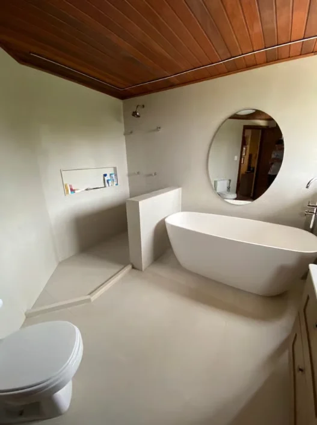

Vidros em geral
Aplicações em vidro pensadas para integrar e valorizar o ambiente.

VIDRAÇARIA ADONAY · SALVADOR, BA
Soluções em vidro e esquadrias de alumínio para valorizar seus espaços, com cuidado em cada detalhe.
UMA OUTRA FORMA DE VER O ESPAÇO
Alguns detalhes mudam a maneira como percebemos um espaço. O vidro conecta, reflete a luz e acrescenta leveza à arquitetura.
VIDRO EM CONTEXTO
Reflexos, transparências e proporções que ajudam a compor a atmosfera de cada ambiente.


SOLUÇÕES ADONAY
Atendimento em Salvador — BA para projetos e necessidades em vidro e alumínio.
Aplicações em vidro pensadas para integrar e valorizar o ambiente.
Detalhes que ampliam a luz e completam o espaço do banheiro.
Esquadrias de alumínio em geral para compor o seu projeto.
Serviços especializados para trabalhos em vidro e alumínio.
CONTE O QUE VOCÊ PRECISA
Compartilhe o serviço que procura e, se quiser, envie uma foto ou referência para iniciar a conversa com a equipe.
Falar com a AdonayDescreva o que precisa para o ambiente.
Fotos e medidas disponíveis ajudam a contextualizar o pedido.
A equipe poderá orientar a conversa a partir da sua necessidade.
SEU PRÓXIMO PROJETO COMEÇA AQUI